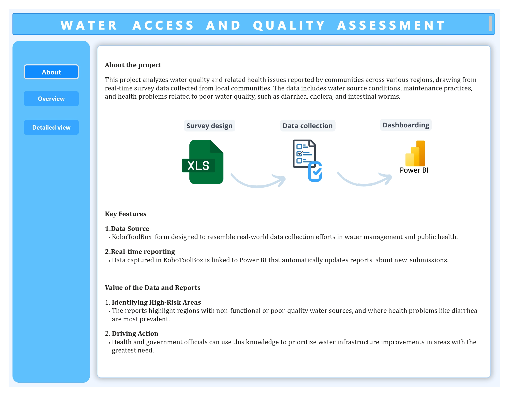
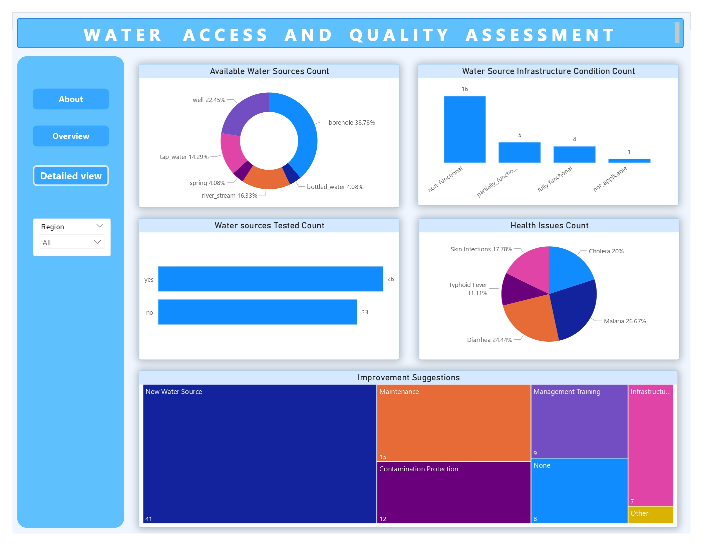
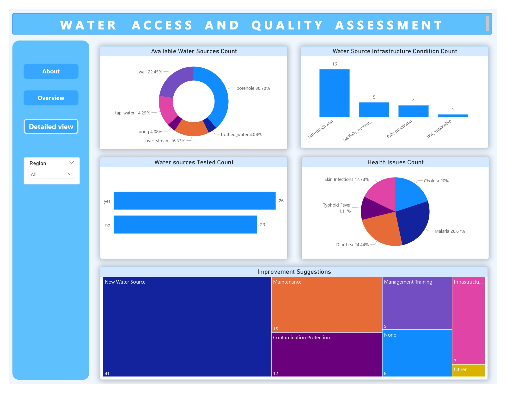

- Leveraged KoboCollect automating data collection about water sources in rural communities, enabling offline data gathering anywhere.
- Developed Power BI interactive dashboards to visualize and analyze collected data in real time, providing critical insights for improving water access and quality in rural communities.
Objective
To collect and analyze data on water access and quality in remote areas in real-time, providing local authorities and NGOs with actionable insights to improve water infrastructure and public health outcomes.
Problem Statement
Rural communities often face challenges with access to clean water. Tracking water availability, quality, and the condition of water sources in these areas is vital for public health and long-term planning, but traditional data collection methods are slow and inefficient. A real-time, scalable solution is needed to improve the monitoring process.
Here are questions I was interested in answering:
- What is the primary water source for villagers?
- What is the infrastructure condition of this primary water source?
- Has the water been tested?
- Is it in the right condition for drinking ?
- Have there been any health related issues from the water source?
- How far is the water source to the villagers approximately?
I took the following steps to create my analysis:
- Identified the problem statement together with the exact questions needed to be collected
- Designed an XLS form formulating the flow how on data would be captured and uploaded it to KoboCollect
- Collected data using the KoboCollect
- Got the data into Power BI from KoboToolBox. Used the Power BI Web option specifying the KoboToolBox Form URL and the API
- Cleaned the data in Power BI using Power Query as the data comes in form of a JSON file and few changes are transform it to a table
- Reported results using a dashboard whilst creating measures and new columns
Here are my key takeaways:
- Most common water source available in Districts are 'Boreholes'
- At Least a lot of water sources are near people within communities by 500 Metres
- Unfortunately a lot of water sources that were tested are not okay or not functioning
- As a result people need more water sources as well as proper maintenance of the already existing water sources
- Which in return will reduce health issues of Malaria, Diarrhea and Cholera
What actions could be taken from my assessment
- To make any impact and help the country, possibly take immediate action starting with the Central Region then Northern Region and finally the Southern Region
- Expected available water sources would be Boreholes which either need maintenance or rather ways to assist the communities to make sure the water is safe to drink
- As well as make sure the water sources are clean + have growing vegetation/bush around the sources cut to reduce accumulation of Mosquitoes causing Malaria
Implementation Plan
- XLS Form Designing
- KoboCollect
- Power BI Dashboarding
1. XLS Form Designing
The XLS form was carefully designed to include advanced logic, validation checks, and skip patterns to ensure accurate data collection. This process allowed us to ensure that only the necessary fields were filled, and validation helped reduce errors in data collection.
To see the XLS file, download here.
Note: The XLS Form has 3 sections (survey, choices and settings) with a structure and variables easier to follow on survey tab, a number of selections on choices tab, and the form metadata on settings hence was not documented on how it was created
2. KoboCollect
Data was collected in real-time using the KoboCollect app, with immediate syncing of data for monitoring on an Open-source platform called KoboToolBox. This enabled us to capture the water sources' condition and health issues as they were reported in the field.
3. Power BI Dashboarding
The collected data was analyzed and visualized using Power BI, allowing for detailed insights into water source conditions and reported health issues across regions. This dashboard provided a clear overview of the situation and helped identify areas needing immediate attention.
To see the file report, download the pbix here.
 

Power BI Model
I took the following actions to create the report:
a) Loading and Transforming
- The Data Source from Kobotoolbox gets loaded into Power BI desktop
- In Query Editor, the data undergoes 6 automatic Applied Steps formatting it from JSON into tables
- conversion
- expansion
- splitting
- expanding validation results
- changing data types
- Additional transformations are added to perfect the data
- removing columns
- renaming columns
- Finally, the data source is also renamed from "?format=json" to "table"
The final renaming columns are:
| Source column name | New column name |
|---|---|
| id | id - kept for identification of the source records |
| section_1/district | district |
| section_1/region | region |
| begin_group_XWd56z4Et/type_of_water_source | type_of_water_source |
| begin_group_XWd56z4Et/distance_to_water_source | distance_to_water_source |
| begin_group_g5tzRh4Yk/water_source_condition | water_source_condition |
| begin_group_yukPlpiaB/water_status | water_status |
| begin_group_yukPlpiaB/water_has_tests | water_has_tests |
| begin_group_lN4JK1E2l/health_related_issues_followup | health_related_issues_followup |
| begin_group_7JigyZfOV/water_source_improvements | water_source_improvements |
| begin_group_lN4JK1E2l/primary_water_usage | primary_water_usage |
| _geolocation.0 | latitude |
| _geolocation.1 | longitude |
b) Measures and Calculated Columns
The following below are Measures added for the Visuals
| Chart Title | Calculation |
|---|---|
| Most common water sources | MAXX( TOPN(1, SUMMARIZE('table', 'table'[type_of_water_source], "CountWaterSource", COUNTROWS('table')), [CountWaterSource], DESC ), 'table'[type_of_water_source] ) |
| Most common distance to water source | CALCULATE( MAXX( TOPN( 1, SUMMARIZE( 'table', 'table'[distance_to_water_source], "CountWaterSourceDistance", COUNTROWS('table') ), [CountWaterSourceDistance], DESC ), 'table'[distance_to_water_source] ) ) |
| Percentage of Tested Water Sources "Not-Okay" | DIVIDE([CountNotOkayWaterSources], [CountTestedWaterSources]) * 100 |
| CountNotOkayWaterSources - measure | CALCULATE( COUNTROWS('table'), 'table'[water_status] = "Not Okay", 'table'[water_has_tests] = "yes" ) |
| CountTestedWaterSources - measure | CALCULATE( COUNTROWS('table'), 'table'[water_has_tests] = "yes" ) |
| Percentage of water sources "Not_Functioning | DIVIDE( COUNTROWS( FILTER( 'table', 'table'[water_source_condition] = "non-functional" ) ), COUNTROWS('table'), 0 ) * 100 |
| Geospatial Distribution of Water - Calculated column | IF( OR( OR( 'table'[water_source_condition] = "non-functional", 'table'[water_source_condition] = "partial-functional" ), 'table'[water_status] = "Not Okay" ), "Not Okay", "Okay" ) |
| Health Issues Count - done for all e.g. for cholera | CALCULATE( COUNTROWS('table'), CONTAINSSTRING('table'[health_related_issues_followup], "cholera") ) |
| Improvement Suggestions -done for all e.g. for contamination protection | CALCULATE( COUNTROWS('table'), CONTAINSSTRING('table'[water_source_improvements], "contamination_protection") |
Report Improvements to be made
The main issue that is usually associated with a report is performance and this usually happens if the Semantic model is not properly checked for scalability
This Semantic model is the logical layer containing the transformations, calculations, and relationships between data sources needed to create reports and dashboard
Luckily, the storage mode used is Import - requiring data to be refreshed to be up-to-date ensuring flexibility and fast performance
But just incase any issues are encountered, there a couple of ways that could be implemented to check what is wrong
1) Performance Analyzer
- The Amount of time taken to load the visuals overtime could start taking long
- Some possible causes might be the measures used
- Below is an example of a filter's performance on the visuals

2) Power Query
- Power Query was already used to remove unnecessary columns and change data types
- But it also be used to see column details to inspect the data
- A good example is water_status having 47% Empty which needs to be looked into to see if it is wrong or not

3) Data Studio
- This performance analyzer tool could also be used
NOTE
Another way that could be considered is a way of only pulling data with the needed columns only before loading to avoid repeatitive transformations for each refresh